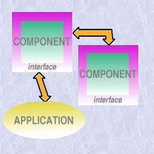
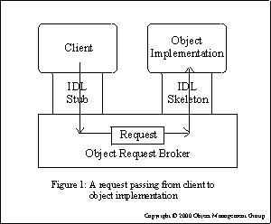
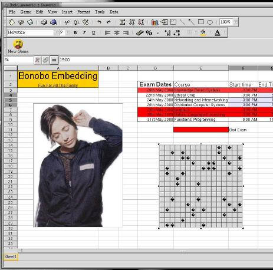

This section focus on the Component-based paradigm. It presents a precise definition which is complemented after by a list of characteristics that a component should fulfill. Since middleware plays an important role in components, a short overview of CORBA is also done. Finally, Bonobo is used as an example.
There isn't much consensus in what constitutes a component. A good yet still incomplete definition is Clemens Szyperski's list of characteristic properties of a component:
A component is an indivisible unit of independent deployment.
A component is a unit of third-party composition.
A component has no persistent state.

An illustration of the use of components
This definition may seem too general but basically constitutes the core on what consists a component and has several implications. This list will be complemented in the next section.
Imagine a big, complex and heterogeneous project divided in different parts, each with its particular function and interacting with other parts of the project, being developed by different teams. The final product may even be located in different platforms and locations. This is a good example in how component-based technology can be used. Basically, each part constitutes a component. An interface contract for each component is established and interaction is done through these interfaces. Each part shouldn't have to worry about the other parts, in particular, their location and platform.
Another example can be found in desktop environments. Imagine a user writing a document or a web page where he wants to integrate a graphic. Putting graphics functionality in the word processor or web page editor would be overloading them (how about audio, movie, barcharts...?). Doing it outside and importing as an image is also not the best solution. But if there is already a mechanism for handling that functionality why not reuse it? Basically, the idea is to "embed" the graphics mechanism in the word processor or web page editor (something like: "when handling this data use this particular mechanism"). But to have a good interaction between mechanisms we need independence, interface contracts and again components appear as a good solution for this.
First, let's refer to the aimed key aspects in component-based development.
Standardized parts and services (both through the standardization of components and the environment in which they operate.)
Minimal or no contact between entities designing components; decoupling of development efforts.
Access to practical (re)use both internal and external through standardized interoperability, configurability, and deployment.
Independent variability through documentation of components 'seams' (the interfaces used and exposed).
Source code for custom needs; binary components for standard needs.
A strict emphasis on component assembly first; manual coding second.
A robust mechanism for the delivery of architectures, frameworks, and services.
But this implies several questions:
How "loose" do we want a component to be? Could it be dependent from other components or context-based? At first glance this doesn't seem desirable since it will minimize reuse which is one of the main aspects desired.
But then how do we minimize problems occurring from deployment and reuse? These problems involve dependencies both from the environment and other components.
How to minimize communication between parts and dependencies on the developments of the several parts?
How to handle third-party interoperability? In order to avoid problems with versioning it is necessary a "black-box" view of the component but that is not enough. The third-party still has to have a guarantee on the services provided by the component.
How to handle heterogeneity between parts (for example, different languages, different platforms,...)?
What happens if the component has persistent state? Having persistent state would make two copies of a component different: is that desirable?
The key aspects and these questions leads us to some discussion on the three points presented above.
As a component is an unit of independent deployment it needs to be well-separated from the environment and even from other components. In other words, the component needs to encapsulate its constituent features. Also, it has to be totally deployed.
The second point relates to the composition with other components by a party exterior to at least one component. To couple with that, the component has to be self-contained and specify exactly what it provides and requires by means of well-defined interfaces and implementation hiding.
The reason for the third point has to do with the fact that a component should be indistinguishable from its copies. By complying to this it is then possible that there is, at most, one copy of each component loaded in each process.
Dion Hinchcliffe and Michael J. Gaffney complemented the three points above with nine other points (see Links and further information). These twelve items constitute what they believe are the "unequivocal requirements a software entity must meet in order to claim to be, dare we say it, a 'true' component".
These nine added items are:
A component must be loosely coupled with other components via interface definitions and implementation separation.
A component must explicitly identify both the interfaces it uses and exposes, and/or the service categories it uses and exposes.
A component has an unbreakable contract with all of its clients by virtue of the services its interface promises to deliver (design by contract).
A component must be deliverable in binary form (black box).
A component must use and expose services through standardized middleware services (DCOM, CORBA, JavaBeans, etc.)
A component must be configurable at design-time/run-time through a standardized interface (such as ActiveX and JavaBeans property sheets or standard configuration files).
A component must be interoperable with other components across processes, machines, networks, languages, operating systems, transaction environments, and tools.
A component should make use of standardized infrastructure services such as security, licensing, versioning, life-cycle management, visual assembly, event notification, configuration, scripting, metadata, introspection, persistence, relationships, administration, management, debugging, and installation.
A component should be able to wire itself into a collaboration with other components solely via design-time/run-time configuration.
The last two items are desirable but not absolutely necessary as well as they are difficult to satisfy. The other seven plus the three described in the beginning enable the realization of the key aspects of component-based development presented above.
Very roughly, the keywords are: interface contracts, middleware, configurability and independent, "black-box"-view unit.
But why comply with all these requirements? For example, why use strategies like CORBA when it doesn't seem to be necessary? Because if we want to make use of the benefits that this technology enables, not complying with just one of the 10 points (the other two, as was said are not necessary but are very desirable) will make the component less reusable and adaptable to the situation. In this case, if later on there would be a need to have different platforms, for example, wrappers would have to be written to do the work this technology is responsible for.
A final note regarding components Vs objects.
Components and objects, at first glance, are very similar concepts. There exists the image of entities, independent units that interact with each other, associated with both and, both are paradigms of development. But there are, however, some fundamental differences.
Here is a table showing the main differences between both concepts:
| Components | Objects |
|---|---|
| all copies are equal | it has a unique identity (instantiation) |
| it has no persistent state | it can have persistent state |
| it encapsulates its features but not its state | it encapsulates its state and behavior |

A request passing from client to object implementation (from the OMG documentation)
Middleware is now a very popular term and is basically used to refer to software "that sits in the middle, connecting diverse (and usually preexisting) programs together". In other words, a separate product that acts as a glue between two applications.
The necessity for middleware strategies appeared with distributed computing. Database systems have been one of the most important areas in this field (see Links and further information). The complexity involved in the communication between software parts residing in different machines (for example, a database server, an application server and the clients) made it necessary that some extra software was added to handle this communication.
Distributed computing is now very widely used. There is a need for strategies that simplify the developer's work (for example, handling the message passing protocol) but provide good flexibility. Using object-oriented principles, Microsoft developed DCOM, Java developed JavaBeans and OMG, the CORBA architecture.
But these are not always the best solutions for a project. There are several strategies and the following list presents the main ones except for CORBA which is described in the following section.
the communication between the application components is done using sockets directly;
the API is very low level, making the overhead associated very low, thus, resulting in more efficient applications;
it is not well suited to handle complex data types especially regarding different types of machine and/or programming languages and so is unsuitable for developing complex applications
function-oriented interface to socket-level communications;
and so is easier to use than raw socket programming;
it is powerful enough to be the basis for many client/server applications;
a standard RPC protocol exists, although there are some incompatible implementations;
capabilities similar to CORBA
there is a good support on Microsoft Operating Systems but this support is sparse outside;
thus making it very good for projects over Microsoft products but not well-suited for cross-platform;
CORBA-like architecture
supports the passing of objects by value (CORBA, for example, only passes references to objects);
but is a Java-only solution and, so, is not the best solution if different languages are used;
XML is also playing an important role in middleware. It is an easily parsed, human readable, simple and, most important, standard and independent format. These characteristics are very useful to connect heterogeneous programs together, both for data representation and communication protocol.
Middleware is what handles the communication between components. The complexity and flexibility required by component designing but still the desire that it is simple to use and implement leads to a middleware solution that:
can handle complex data types and communication
enables connecting different platforms, in particular, different operating systems, hardware and software
enables the communication between different languages
provides all the above in a standard way
hides from the developer the complexity of communication (for examples, the message passing passing protocol) and of complying with the items above
Probably, the product that fulfills best the items above is CORBA since DCOM is very bounded to the platform and JavaBeans to the language.
CORBA, or Common Object Request Broker Architecture, is defined by OMG (Object Management Group). It is a popular architecture and specification for creating software components. Its purpose is to handle interoperability between different hardware and software products, in a standard and transparent way, thus making it possible for two different applications from different vendors, in different computers, operating systems, programming languages and networks to communicate with each other.
It's an object-oriented architecture and its building blocks are:
Basically, is used to specify interfaces between CORBA objects.
Moreover, defines mappings for a variety of different languages and which purpose is to abstract from the languages being used to implement the components so that they all speak a common language.
It's not an implementation language; its sole purpose is to define interfaces.
A software component whose purpose is to facilitate communications between objects by, for example, providing capabilities like:
to locate a remote object, given an object reference
marshaling of parameters and return values to and from remote method invocations
So, basically, ORBs handle requests between applications enabling abstraction of where the program that receives the request and the one sending are.
Provides a standard communication between different ORBs above TCP/IP. Other protocols exist, and not only over TCP/IP, but this one is the most popular.
To facilitate the communication between objects, Object References are used (in the IIOP case, these are called Interoperable Object References, IOR): when a component of an application wants to access a CORBA object, it first obtains an OR for that object. Using the OR, the component can then invoke methods on the object.
CORBA provides, with these building blocks, independence of language - CORBA objects and clients can be implemented in any language that exists IDL for it, which is a big set, and need not know which language was used to implement other CORBA objects that they talk to - and independence of platform - CORBA objects can be used on any platform for which there is a CORBA ORB implementation.
It is said that a component is a server if it contains CORBA objects whose services are accessible to other objects. And, naturally, it is said to be a client if it accesses services from some other CORBA object. Of course, a component can act both as a client and a server.
Related with these terms are the stubs and skeletons:
a small piece of code that allows a client component to access a server component
pieces of code that one "fills in" when implementing a server
Finally, the Object Management Group established the Object Management Architecture (OMA) of which CORBA is a part. OMA consists of:
ORB function[1]
CORBAservices - object services
CORBAfacilities - common facilities
domain interfaces
application objects
It is important to note that these include a set standard services, compliant with CORBA, containing directory and naming services and transaction services.

Part of one of the screenshots at GNOME's webpage. It shows miscellaneous embedding (for example, playing GnoMines on the spreadsheet...).
"BONOBO is the GNOME architecture for creating reusable software components and compound documents."
GNOME implemented BONOBO in order to comply with interoperability between different applications in the desktop (e.g., embed a graphics object in a word processor document).
BONOBO is basically a set of CORBA interfaces and an implementation in GNOME/GTK+ of these interfaces that are designed to be simple to use and hide CORBA and between-components protocol used. An application uses these interfaces to export its functionality or integrate other components functionality making it possible to edit a graphic or even play GnoMines in a spreadsheet.
BONOBO is targeted both at the developer and the user.
The GNOME project is very large and consists of multiple applications. This applications are developed by several people, in particular, hobbyists whose contribution can disappear at any point.
Component software helps reduce the complexity of applications by reducing the amount of information a programmer needs to know about the system.
The component software also enables the developer to build larger, more complex applications by gluing different components together.
UNIX provides very powerful mechanisms to a user with small programs like sed, awk, cat and sort and pipes that enables this programs to be chained, where the output from the first is used as the input for the second. This enables the user to do very powerful actions in a simple command line.
BONOBO uses this as an image and applies it to desktop environments. Instead of building applications more and more complex and with every possible functionality, simply reuse what is already built and "give to Caesar what belongs to Caesar". For example, writing a document in a word processor and adding data from a spreadsheet program. What is meant with the above is that, instead of having to leave the word processor, launch the spreadsheet, copy the data and paste it to the text, being able to insert data directly from the word processor. The word processor will include the data from the spreadsheet and launch the program. Furthermore, the user would be able to edit the data included from the spreadsheet directly from the word processor or could have the data refreshed when it was changed in the spreadsheet (imagine, for example, daily reports).
The term for this is Document-Centric world.
BONOBO is similar to the OLE strategy in Microsoft.
All BONOBO components must implement the Bonobo::Unknown interface. This interface consists of a function query_interface() and the pair ref()/unref(). The first is used to check if an interface is implemented and to obtain the required interface. The pair is described in the next point. It is by these interfaces that the component states if it is embedable (for example, it is embedable if it provides the Bonobo::Embedable interface), if it is storable, if it can be edit in place, etc.
Components keep track on if their services are being used by the ref()/unref() functions, the first incrementing the counter when a request is received, the second decrementing when the request has been fulfilled.
Documents containing heterogeneous data can still be stored by using compound documents and requesting that the components responsible for that type of data do the storage (by providing the respective interfaces)
There are two types of "components": the ones that provide services (the containee/component) and the ones that use it (the containers). Looking at the example mentioned before, the word processor is a container and the spreadsheet program is the containee/component. A program can act as both parts.
It is the most common way for components to be registered and, thus, being found by others.
BONOBO addresses the requirements for:
creating compound documents
object linking
object embedding
service activation
storage facilities
menu and toolbar negotiation (merging)
printing
Cetus links is a site devoted to providing links and information on Objects and Components. At the time of this writing, they stated having 18873 links related with these subjects. Among this were the following:
Components and Objects Together by Clemens Szperski who also wrote a popular book on components.
Components: Where Are They? by Dion Hinchcliffe and Michael J. Gaffney that presents a very concrete study on components and from where the requirements and characteristics presented in this document where most based.
CDBi FORUM stands for Component-Based Development and Integration Forum and provides several interesting and useful informations about components.
Lesson 134: Middleware by Jonathan Angel provides a good overview of middleware. It focuses on the evolution of this software starting from the appearance of distributed computing to distributed objects with CORBA, JavaBeans and DCOM. It also makes a short reference to XML.
As for CORBA, there is a good number of documentation on CORBA. A good place to start is the OMG homepage.
| [1] | CORBA's role is to implement this |